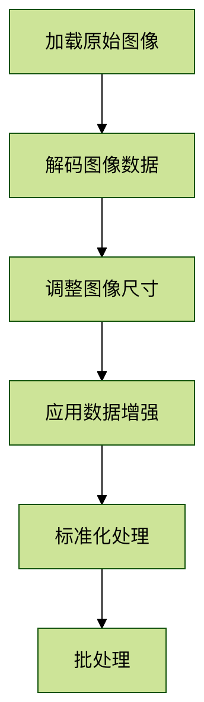

TensorFlow 画像データ処理
画像データとは
画像データは、ピクセルで構成される2次元行列（グレースケール画像）または3次元テンソル（カラー画像）です。TensorFlowでは、画像は通常次のように表されます：
- グレースケール画像：[高さ, 幅] または [高さ, 幅, 1]
- カラー画像：[高さ, 幅, 3]（RGBチャンネル）
なぜ画像処理が必要か
- データの正規化：画像サイズと数値範囲を統一する
- データ拡張：変換によってトレーニングサンプルの多様性を高める
- 特徴抽出：画像内の重要な情報を強調する
- 前処理：モデル入力用に適切なデータ形式を準備する
TensorFlow画像処理コア API
tf.image モジュール
TensorFlowが提供する画像処理専用のAPIセット：
例
import tensorflow as tf
from tensorflow import image as tf_image
from tensorflow import image as tf_image
よく使用される機能の分類：
| 機能カテゴリ | 主要メソッドの例 |
|---|---|
| 色調整 | adjust_brightness, adjust_contrast |
| 幾何学的変換 | flip, rotate, crop_to_bounding_box |
| 画像合成 | blend, draw_bounding_boxes |
| フォーマット変換 | encode_jpeg, decode_image |
| 統計操作 | total_variation, per_image_standardization |
画像前処理技術の詳細
正規化処理
ピクセル値を固定範囲（通常は[0,1]または[-1,1]）に正規化します：
例
def normalize(image):
"""uint8画像を[0,1]範囲に正規化"""
image = tf.cast(image, tf.float32) # float32に変換
return image / 255.0 # 最大値で割る
# 使用例
image = tf.random.uniform([256,256,3], 0, 255, dtype=tf.uint8)
normalized_image = normalize(image)
"""uint8画像を[0,1]範囲に正規化"""
image = tf.cast(image, tf.float32) # float32に変換
return image / 255.0 # 最大値で割る
# 使用例
image = tf.random.uniform([256,256,3], 0, 255, dtype=tf.uint8)
normalized_image = normalize(image)
データ拡張技術
ランダム変換によりデータの多様性を高めます：
例
def augment_image(image, label):
"""ランダム拡張を適用する画像処理パイプライン"""
# ランダムな左右反転
image = tf_image.random_flip_left_right(image)
# ランダムな明るさ調整
image = tf_image.random_brightness(image, max_delta=0.2)
# ランダムなコントラスト調整
image = tf_image.random_contrast(image, lower=0.8, upper=1.2)
# ランダムな回転（-15°〜+15°）
angle = tf.random.uniform([], -15, 15) * (3.1415/180)
image = tf_image.rotate(image, angle)
return image, label
"""ランダム拡張を適用する画像処理パイプライン"""
# ランダムな左右反転
image = tf_image.random_flip_left_right(image)
# ランダムな明るさ調整
image = tf_image.random_brightness(image, max_delta=0.2)
# ランダムなコントラスト調整
image = tf_image.random_contrast(image, lower=0.8, upper=1.2)
# ランダムな回転（-15°〜+15°）
angle = tf.random.uniform([], -15, 15) * (3.1415/180)
image = tf_image.rotate(image, angle)
return image, label
画像の読み込みとバッチ処理の流れ
完全な処理フロー

実際のコード実装
例
def preprocess_dataset(dataset, batch_size=32, is_training=False):
"""画像前処理パイプラインの構築"""
# 前処理関数を定義
def _preprocess(image, label):
# JPEG画像をデコード
image = tf_image.decode_jpeg(image, channels=3)
# サイズを統一サイズに調整
image = tf_image.resize(image, [224, 224])
# トレーニング時にデータ拡張を適用
if is_training:
image = augment_image(image)
# 正規化処理
image = normalize(image)
return image, label
# 前処理を適用してバッチを作成
dataset = dataset.map(_preprocess, num_parallel_calls=tf.data.AUTOTUNE)
dataset = dataset.batch(batch_size)
dataset = dataset.prefetch(tf.data.AUTOTUNE)
return dataset
"""画像前処理パイプラインの構築"""
# 前処理関数を定義
def _preprocess(image, label):
# JPEG画像をデコード
image = tf_image.decode_jpeg(image, channels=3)
# サイズを統一サイズに調整
image = tf_image.resize(image, [224, 224])
# トレーニング時にデータ拡張を適用
if is_training:
image = augment_image(image)
# 正規化処理
image = normalize(image)
return image, label
# 前処理を適用してバッチを作成
dataset = dataset.map(_preprocess, num_parallel_calls=tf.data.AUTOTUNE)
dataset = dataset.batch(batch_size)
dataset = dataset.prefetch(tf.data.AUTOTUNE)
return dataset
高度な画像処理テクニック
Keras前処理レイヤーの使用
TensorFlow 2.xは、より高度な前処理APIを提供します：
例
from tensorflow.keras.layers.experimental import preprocessing
# 前処理モデルを作成
augmenter = tf.keras.Sequential([
preprocessing.RandomFlip("horizontal"),
preprocessing.RandomRotation(0.1),
preprocessing.RandomZoom(0.1),
preprocessing.Rescaling(1./255) # 正規化
])
# モデルで使用
model = tf.keras.Sequential([
augmenter, # データ拡張レイヤー
tf.keras.layers.Conv2D(32, 3, activation='relu'),
# その他のレイヤー...
])
# 前処理モデルを作成
augmenter = tf.keras.Sequential([
preprocessing.RandomFlip("horizontal"),
preprocessing.RandomRotation(0.1),
preprocessing.RandomZoom(0.1),
preprocessing.Rescaling(1./255) # 正規化
])
# モデルで使用
model = tf.keras.Sequential([
augmenter, # データ拡張レイヤー
tf.keras.layers.Conv2D(32, 3, activation='relu'),
# その他のレイヤー...
])
カスタム画像処理レイヤー
カスタム前処理操作の実装：
例
class RandomColorDistortion(tf.keras.layers.Layer):
def __init__(self, contrast_range=[0.5, 1.5], **kwargs):
super().__init__(**kwargs)
self.contrast_range = contrast_range
def call(self, images, training=None):
if not training:
return images
# ランダムなコントラスト調整
contrast_factor = tf.random.uniform(
[], self.contrast_range[0], self.contrast_range[1])
images = tf.image.adjust_contrast(images, contrast_factor)
# ランダムな彩度調整
images = tf.image.random_saturation(images, 0.5, 1.5)
return images
def __init__(self, contrast_range=[0.5, 1.5], **kwargs):
super().__init__(**kwargs)
self.contrast_range = contrast_range
def call(self, images, training=None):
if not training:
return images
# ランダムなコントラスト調整
contrast_factor = tf.random.uniform(
[], self.contrast_range[0], self.contrast_range[1])
images = tf.image.adjust_contrast(images, contrast_factor)
# ランダムな彩度調整
images = tf.image.random_saturation(images, 0.5, 1.5)
return images
実践演習
演習1：画像正規化の比較
テスト画像を1枚読み込み、以下の各正規化方法を適用して結果を可視化します：
- 255で割る（[0,1]範囲）
- ImageNetの平均と標準偏差による標準化（mean=[0.485,0.456,0.406], std=[0.229,0.224,0.225]）
- カスタム正規化（例：[-1,1]範囲にスケーリング）
演習2：データ拡張効果の観察
1枚の画像を選択し、異なる拡張技術の組み合わせ（反転+回転+色調整）を適用して、10個の拡張バージョンを生成して並べて表示し、拡張効果を観察します。
演習3：完全な前処理パイプライン
以下の手順を含む完全な画像前処理パイプラインを構築します：
- TFRecordから画像を読み込む
- 画像をデコードする
- 256x256にランダムクロップする
- ランダムに水平反転する
- [-1,1]範囲に正規化する
- バッチサイズ32のデータセットを作成する
よくある質問と回答
Q1：異なるサイズの画像をどのように処理しますか？
A：次を使用しますtf.image.resizeサイズを統一するか、次を使用しますtf.image.resize_with_crop_or_padアスペクト比を維持しながらクロップ/パディングします。
Q2：画像処理はCPUとGPUのどちらで行うべきですか？
A：通常、画像の前処理はCPUで行うことをお勧めします。tf.data.Dataset.map的num_parallel_callsnum_parallel_calls パラメータを使用して並列処理します。
Q3：データ拡張による情報損失を防ぐにはどうすればよいですか？
A：拡張パラメータの範囲を適切に設定し、重要なタスク（医学画像など）では幾何学的変換を慎重に使用し、色空間変換を優先的に検討します。
Q4：超大画像を処理するためのベストプラクティスは？
A：次の使用を検討してください：tf.image.extract_patches大きな画像を小さなブロックに分割するか、プログレッシブ読み込み技術を使用します。
クリックしてメモを共有
<p style="font-size:14px;">メモはこの記事の内容の拡張である必要があります！</p><br> <p style="font-size:12px;"><a href="../tougao.html" target="_blank">記事の投稿はこちらをクリック</a></p> <p style="font-size:14px;"><a href="../w3cnote/runoob-user-test-intro.html" target="_blank">登録招待コードの取得方法</a></p> <h3 class="text-muted"><i class="fa fa-info-circle" aria-hidden="true"></i> メモを共有する前に<a href=";.html" class="runoob-pop">ログイン</a>が必要です！</h3> <p><a href="../w3cnote/runoob-user-test-intro.html" target="_blank">登録招待コードの取得方法</a></p>